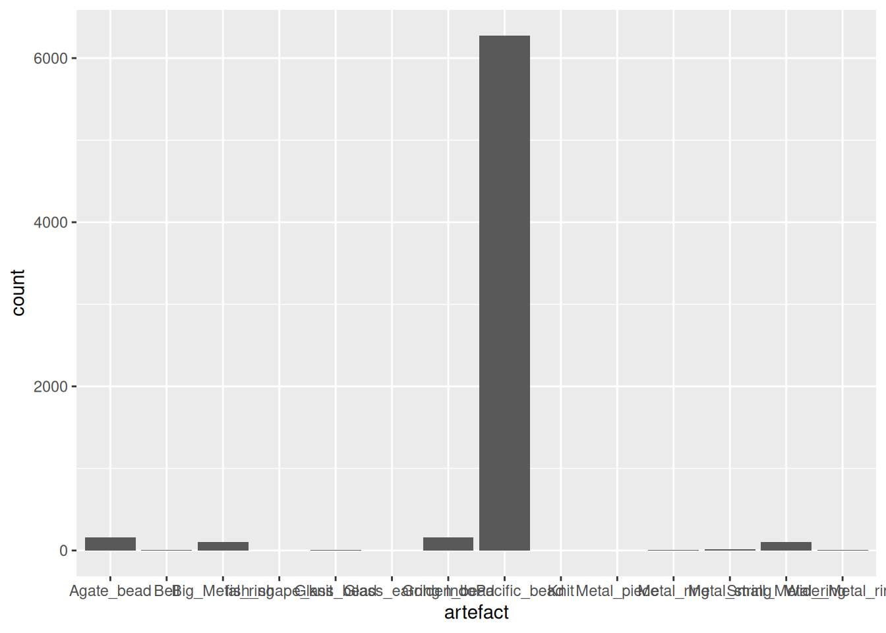

library(tidyverse)
library(here)
mortuary_data <- read_csv(here("data/mortuary_clean.csv"))EDA: Transforming data with tidyverse
Prerequisites
Knowledge
Core + Visualising data
Objects
Project organisation + Data cleaning
Sometimes cleaning our data is not enough, and we need to make further modifications. We can transform data using various functions from dplyr.
Again, let’s start a new script and call it 02_data-transform.R, saved to scripts/, and load tidyverse and here, and the data.
Subsetting data
The two main functions for subsetting data are select() and filter().
select() allows us to select columns (yes, they nailed the name).
# by name
select(mortuary_data, Golden_bead)# A tibble: 125 × 1
Golden_bead
<dbl>
1 NA
2 NA
3 NA
4 5
5 2
6 2
7 NA
8 2
9 NA
10 2
# ℹ 115 more rows# multiple names
select(mortuary_data, Golden_bead, Glass_bead)# A tibble: 125 × 2
Golden_bead Glass_bead
<dbl> <dbl>
1 NA NA
2 NA NA
3 NA NA
4 5 NA
5 2 NA
6 2 NA
7 NA 1
8 2 1
9 NA NA
10 2 NA
# ℹ 115 more rows# or (as before) position
select(mortuary_data, c(22,23))# A tibble: 125 × 2
Golden_bead Glass_bead
<dbl> <dbl>
1 NA NA
2 NA NA
3 NA NA
4 5 NA
5 2 NA
6 2 NA
7 NA 1
8 2 1
9 NA NA
10 2 NA
# ℹ 115 more rows
Function conflicts
There are many packages made for R, and only so many ways to name a function (with a name that makes sense…) When two packages have functions with the same name, this can create a conflict, since R will only be able to use one of the functions.
For example, if you have both dplyr and the MASS packages loaded, you will likely run into issues with the select() function, since both packages have a function by that name, but they serve different purposes and have different argument structures.
If R has decided to use the function from MASS, running the code select(clean_data, Glass_bead) will result in an error: Error in select(clean_data, Glass_bead) : unused argument (Glass_bead)
To resolve this you can specify the function namespace, namespace::function().
dplyr::select(mortuary_data, Glass_bead)You are essentially telling R that you specifically want to use select() from {dplyr}.
You may have noted that there was no need to surround the name of the column in quotes ("Glass_bead"). This is a tidyverse thing that I won’t go into any further. This may not be possible to do in other packages, where you could encounter an error in the form of object Glass_bead not found.

filter() allows you to filter entries/rows based on certain conditions. If we wanted to only show the data that are associated with graves prior European arrival (Phase == "pre"):
filter(mortuary_data, Phase == "pre")# A tibble: 29 × 55
Layer ID Burial_axis Degree_axis Condition Length Width Height Pit
<dbl> <chr> <dbl> <dbl> <dbl> <dbl> <dbl> <dbl> <chr>
1 1 0 1 290 3 115 70 NA P9
2 1 6 1 310 3 85 55 13 P038
3 1 8 1 295 2 100 58 15 P038
4 1 12 2 NA 3 NA NA 9 P038
5 1 21 1 290 2 105 47 22 P050
6 1 25 1 295 1 95 45 37 P061
7 1 27 1 315 3 115 80 20 P047
8 1 28 1 305 2 105 45 28 P058
9 1 32 1 305 1 140 58 50 P071
10 1 34 1 305 2 102 60 45 P018
# ℹ 19 more rows
# ℹ 46 more variables: sampled <chr>, start_layer <dbl>, start_depth <dbl>,
# end_depth <dbl>, start_depth_sure <chr>, old_layer <dbl>, Phase <chr>,
# Coffin <dbl>, Straw_mat <dbl>, Gender <dbl>, Age <chr>, Agate_bead <dbl>,
# Golden_bead <dbl>, Glass_bead <dbl>, IndoPacific_bead <dbl>,
# Glass_earring <dbl>, Big_Metal_ring <dbl>, Small_Metal_ring <dbl>,
# Wide_Metal_ring <dbl>, Metal_ring <dbl>, Bell <dbl>, Knit <lgl>, …We can also filter by numeric values:
filter(mortuary_data, start_layer == 5) # only values that are equal to 5# A tibble: 9 × 55
Layer ID Burial_axis Degree_axis Condition Length Width Height Pit
<dbl> <chr> <dbl> <dbl> <dbl> <dbl> <dbl> <dbl> <chr>
1 1 0 1 290 3 115 70 NA P9
2 1 8 1 295 2 100 58 15 P038
3 1 12 2 NA 3 NA NA 9 P038
4 1 40 1 280 1 100 55 20 P041
5 1 81 1 15 1 140 70 60 P086
6 1 83 2 NA 3 NA NA 30 P117
7 1 85 1 300 1 110 55 36 P083
8 1 86 1 320 1 80 50 24 P082
9 1 115 1 310 2 110 55 20 P144
# ℹ 46 more variables: sampled <chr>, start_layer <dbl>, start_depth <dbl>,
# end_depth <dbl>, start_depth_sure <chr>, old_layer <dbl>, Phase <chr>,
# Coffin <dbl>, Straw_mat <dbl>, Gender <dbl>, Age <chr>, Agate_bead <dbl>,
# Golden_bead <dbl>, Glass_bead <dbl>, IndoPacific_bead <dbl>,
# Glass_earring <dbl>, Big_Metal_ring <dbl>, Small_Metal_ring <dbl>,
# Wide_Metal_ring <dbl>, Metal_ring <dbl>, Bell <dbl>, Knit <lgl>,
# fish_shape_knit <dbl>, Metal_string <dbl>, Metal_piece <dbl>, …filter(mortuary_data, start_layer != 5) # only values that are NOT equal to 5# A tibble: 81 × 55
Layer ID Burial_axis Degree_axis Condition Length Width Height Pit
<dbl> <chr> <dbl> <dbl> <dbl> <dbl> <dbl> <dbl> <chr>
1 1 1 1 295 2 102 60 30 P051
2 1 2 1 290 2 104 75 60 P051
3 1 3 1 290 1 130 82 60 P050
4 1 4 1 300 2 140 73 30 P038
5 1 5 1 285 2 70 50 35 P050
6 1 6 1 310 3 85 55 13 P038
7 1 7 1 290 2 130 60 29 P028
8 1 9 1 300 1 130 70 60 P052
9 1 11 1 300 2 90 60 40 P060
10 1 15 1 290 2 95 60 27 P040
# ℹ 71 more rows
# ℹ 46 more variables: sampled <chr>, start_layer <dbl>, start_depth <dbl>,
# end_depth <dbl>, start_depth_sure <chr>, old_layer <dbl>, Phase <chr>,
# Coffin <dbl>, Straw_mat <dbl>, Gender <dbl>, Age <chr>, Agate_bead <dbl>,
# Golden_bead <dbl>, Glass_bead <dbl>, IndoPacific_bead <dbl>,
# Glass_earring <dbl>, Big_Metal_ring <dbl>, Small_Metal_ring <dbl>,
# Wide_Metal_ring <dbl>, Metal_ring <dbl>, Bell <dbl>, Knit <lgl>, …filter(mortuary_data, start_layer > 5) # only values that are greater than 5# A tibble: 33 × 55
Layer ID Burial_axis Degree_axis Condition Length Width Height Pit
<dbl> <chr> <dbl> <dbl> <dbl> <dbl> <dbl> <dbl> <chr>
1 1 1 1 295 2 102 60 30 P051
2 1 2 1 290 2 104 75 60 P051
3 1 3 1 290 1 130 82 60 P050
4 1 5 1 285 2 70 50 35 P050
5 1 7 1 290 2 130 60 29 P028
6 1 9 1 300 1 130 70 60 P052
7 1 11 1 300 2 90 60 40 P060
8 1 15 1 290 2 95 60 27 P040
9 1 16 1 300 1 76 45 37 P072
10 1 17 1 292 2 100 60 30 P028
# ℹ 23 more rows
# ℹ 46 more variables: sampled <chr>, start_layer <dbl>, start_depth <dbl>,
# end_depth <dbl>, start_depth_sure <chr>, old_layer <dbl>, Phase <chr>,
# Coffin <dbl>, Straw_mat <dbl>, Gender <dbl>, Age <chr>, Agate_bead <dbl>,
# Golden_bead <dbl>, Glass_bead <dbl>, IndoPacific_bead <dbl>,
# Glass_earring <dbl>, Big_Metal_ring <dbl>, Small_Metal_ring <dbl>,
# Wide_Metal_ring <dbl>, Metal_ring <dbl>, Bell <dbl>, Knit <lgl>, …filter(mortuary_data, start_layer > 5 & start_layer <= 12) # only values that are greater than 5 AND (&) less than, or equal to 12# A tibble: 31 × 55
Layer ID Burial_axis Degree_axis Condition Length Width Height Pit
<dbl> <chr> <dbl> <dbl> <dbl> <dbl> <dbl> <dbl> <chr>
1 1 2 1 290 2 104 75 60 P051
2 1 3 1 290 1 130 82 60 P050
3 1 5 1 285 2 70 50 35 P050
4 1 7 1 290 2 130 60 29 P028
5 1 9 1 300 1 130 70 60 P052
6 1 11 1 300 2 90 60 40 P060
7 1 15 1 290 2 95 60 27 P040
8 1 16 1 300 1 76 45 37 P072
9 1 17 1 292 2 100 60 30 P028
10 1 18 1 280 2 110 70 24 P061
# ℹ 21 more rows
# ℹ 46 more variables: sampled <chr>, start_layer <dbl>, start_depth <dbl>,
# end_depth <dbl>, start_depth_sure <chr>, old_layer <dbl>, Phase <chr>,
# Coffin <dbl>, Straw_mat <dbl>, Gender <dbl>, Age <chr>, Agate_bead <dbl>,
# Golden_bead <dbl>, Glass_bead <dbl>, IndoPacific_bead <dbl>,
# Glass_earring <dbl>, Big_Metal_ring <dbl>, Small_Metal_ring <dbl>,
# Wide_Metal_ring <dbl>, Metal_ring <dbl>, Bell <dbl>, Knit <lgl>, …filter(mortuary_data, start_layer > 5 | start_layer < 12) # only values that are greater than 5 OR (|) less than 12# A tibble: 90 × 55
Layer ID Burial_axis Degree_axis Condition Length Width Height Pit
<dbl> <chr> <dbl> <dbl> <dbl> <dbl> <dbl> <dbl> <chr>
1 1 0 1 290 3 115 70 NA P9
2 1 1 1 295 2 102 60 30 P051
3 1 2 1 290 2 104 75 60 P051
4 1 3 1 290 1 130 82 60 P050
5 1 4 1 300 2 140 73 30 P038
6 1 5 1 285 2 70 50 35 P050
7 1 6 1 310 3 85 55 13 P038
8 1 7 1 290 2 130 60 29 P028
9 1 8 1 295 2 100 58 15 P038
10 1 9 1 300 1 130 70 60 P052
# ℹ 80 more rows
# ℹ 46 more variables: sampled <chr>, start_layer <dbl>, start_depth <dbl>,
# end_depth <dbl>, start_depth_sure <chr>, old_layer <dbl>, Phase <chr>,
# Coffin <dbl>, Straw_mat <dbl>, Gender <dbl>, Age <chr>, Agate_bead <dbl>,
# Golden_bead <dbl>, Glass_bead <dbl>, IndoPacific_bead <dbl>,
# Glass_earring <dbl>, Big_Metal_ring <dbl>, Small_Metal_ring <dbl>,
# Wide_Metal_ring <dbl>, Metal_ring <dbl>, Bell <dbl>, Knit <lgl>, …This could be combined with select() to only show the relevant columns.
select(filter(mortuary_data, Phase == "pre"), ID, Golden_bead, Small_Metal_ring)# A tibble: 29 × 3
ID Golden_bead Small_Metal_ring
<chr> <dbl> <dbl>
1 0 NA 1
2 6 NA 2
3 8 NA NA
4 12 2 1
5 21 1 4
6 25 NA 3
7 27 NA 4
8 28 NA 2
9 32 6 NA
10 34 4 NA
# ℹ 19 more rowsAnd now our code is very quickly becomming unreadable for humans… It’s good practice to break up code to avoid having too many nested functions. In the above case we only have one function inside filter(), but that function has quite a few arguments. It’s best to create multiple steps.
pre_euro <- filter(mortuary_data, Phase == "pre")
select(pre_euro, ID, Golden_bead, Small_Metal_ring)# A tibble: 29 × 3
ID Golden_bead Small_Metal_ring
<chr> <dbl> <dbl>
1 0 NA 1
2 6 NA 2
3 8 NA NA
4 12 2 1
5 21 1 4
6 25 NA 3
7 27 NA 4
8 28 NA 2
9 32 6 NA
10 34 4 NA
# ℹ 19 more rowsFiltering on multiple variables:
pre_euro_cond2 <- filter(mortuary_data,
Phase == "pre",
Condition == 2)
pre_euro_cond2_select <- select(pre_euro_cond2, ID, Golden_bead, Small_Metal_ring)Mean golden beads for Pit P061 with Condition 2 (partially disturbed).
mean(pre_euro_cond2_select$Golden_bead, na.rm = T)[1] 2.125mean(pre_euro_cond2_select$Small_Metal_ring, na.rm = T)[1] 2.666667
Missing data in R
You will often see the default setting for removing missing values as FALSE. This may seem strange. Why not just remove them by default for convenience? This is because of the R philosophy that no values should be silently removed. Either a function will not remove NAs, or it will give you a message informing you how many missing values/rows were removed.
If we wanted to also calculate the mean for the other conditions, we could repeat the above steps for Condition == 1 and Condition == 3, but that would quickly get tedious. There is an easier way to calculate multiple means and other descriptive statistics using the summarise() and group_by functions from {dplyr}.
Groups
Groups allow you to calculate statistics and perform operations on groups within the data. For example, we could group the data by the Phase variable and then perform a calculation on each level of Phase. The function to group data is group_by().
group_by(.data = mortuary_data, Phase)# A tibble: 125 × 55
# Groups: Phase [6]
Layer ID Burial_axis Degree_axis Condition Length Width Height Pit
<dbl> <chr> <dbl> <dbl> <dbl> <dbl> <dbl> <dbl> <chr>
1 1 0 1 290 3 115 70 NA P9
2 1 1 1 295 2 102 60 30 P051
3 1 2 1 290 2 104 75 60 P051
4 1 3 1 290 1 130 82 60 P050
5 1 4 1 300 2 140 73 30 P038
6 1 5 1 285 2 70 50 35 P050
7 1 6 1 310 3 85 55 13 P038
8 1 7 1 290 2 130 60 29 P028
9 1 8 1 295 2 100 58 15 P038
10 1 9 1 300 1 130 70 60 P052
# ℹ 115 more rows
# ℹ 46 more variables: sampled <chr>, start_layer <dbl>, start_depth <dbl>,
# end_depth <dbl>, start_depth_sure <chr>, old_layer <dbl>, Phase <chr>,
# Coffin <dbl>, Straw_mat <dbl>, Gender <dbl>, Age <chr>, Agate_bead <dbl>,
# Golden_bead <dbl>, Glass_bead <dbl>, IndoPacific_bead <dbl>,
# Glass_earring <dbl>, Big_Metal_ring <dbl>, Small_Metal_ring <dbl>,
# Wide_Metal_ring <dbl>, Metal_ring <dbl>, Bell <dbl>, Knit <lgl>, …As you can see above, group_by() doesn’t seem to make any changes to the data, but if you look closely under the dimensions of the tibble at the top of the tibble itself, we now have # Groups: Phase [6].
We can also see the class() of the tibble will be “grouped_df”.
class(group_by(mortuary_data, Phase))[1] "grouped_df" "tbl_df" "tbl" "data.frame"summarise()
summarise() (or summarize()) from dplyr is a very useful way of getting a wide range of descriptive statistics.
summarise(
.data = mortuary_data,
mean_golden = mean(Golden_bead, na.rm = T)
)# A tibble: 1 × 1
mean_golden
<dbl>
1 3.41Like mutate(), summarise() takes a .data argument first, and then name-value pairs for the new variable name and the function to compute the summary statistic(s). Unlike mutate(), the output of summarise is completely new data frame with one row per variable and one column per summary statistic. Above we created one column (mean_golden) and one row (the mean value of the Golden_bead variable).
We could also compute additional descriptives.
summarise(
mortuary_data,
mean_golden = mean(Golden_bead, na.rm = T),
median_golden = median(Golden_bead, na.rm = T),
sd_golden = sd(Golden_bead, na.rm = T)
)# A tibble: 1 × 3
mean_golden median_golden sd_golden
<dbl> <dbl> <dbl>
1 3.41 2 8.62Three name-value pairs equals three columns. To see how these descriptive statistics apply to different groups, such as the different phases of occupation in the Phase variable, we could use group_by function
mortuary_data |>
group_by(Phase) |>
summarise(
mortuary_data,
mean_golden = mean(Golden_bead, na.rm = T),
median_golden = median(Golden_bead, na.rm = T),
sd_golden = sd(Golden_bead, na.rm = T)
)Warning: Returning more (or less) than 1 row per `summarise()` group was deprecated in
dplyr 1.1.0.
ℹ Please use `reframe()` instead.
ℹ When switching from `summarise()` to `reframe()`, remember that `reframe()`
always returns an ungrouped data frame and adjust accordingly.`summarise()` has grouped output by 'Phase'. You can override using the
`.groups` argument.# A tibble: 750 × 58
# Groups: Phase [6]
Phase Layer ID Burial_axis Degree_axis Condition Length Width Height Pit
<chr> <dbl> <chr> <dbl> <dbl> <dbl> <dbl> <dbl> <dbl> <chr>
1 pre 1 0 1 290 3 115 70 NA P9
2 euro 1 1 1 295 2 102 60 30 P051
3 post 1 2 1 290 2 104 75 60 P051
4 euro 1 3 1 290 1 130 82 60 P050
5 euro 1 4 1 300 2 140 73 30 P038
6 euro 1 5 1 285 2 70 50 35 P050
7 pre 1 6 1 310 3 85 55 13 P038
8 euro 1 7 1 290 2 130 60 29 P028
9 pre 1 8 1 295 2 100 58 15 P038
10 post 1 9 1 300 1 130 70 60 P052
# ℹ 740 more rows
# ℹ 48 more variables: sampled <chr>, start_layer <dbl>, start_depth <dbl>,
# end_depth <dbl>, start_depth_sure <chr>, old_layer <dbl>, Coffin <dbl>,
# Straw_mat <dbl>, Gender <dbl>, Age <chr>, Agate_bead <dbl>,
# Golden_bead <dbl>, Glass_bead <dbl>, IndoPacific_bead <dbl>,
# Glass_earring <dbl>, Big_Metal_ring <dbl>, Small_Metal_ring <dbl>,
# Wide_Metal_ring <dbl>, Metal_ring <dbl>, Bell <dbl>, Knit <lgl>, …or the .by argument in summarise.
summarise(
mortuary_data,
mean_golden = mean(Golden_bead, na.rm = T),
median_golden = median(Golden_bead, na.rm = T),
sd_golden = sd(Golden_bead, na.rm = T),
.by = Phase
)# A tibble: 6 × 4
Phase mean_golden median_golden sd_golden
<chr> <dbl> <dbl> <dbl>
1 pre 7.33 2 16.7
2 euro 2.03 2 1.18
3 post 2.25 2 1.26
4 <NA> NaN NA NA
5 chi 1 1 NA
6 disturbed NaN NA NA
Note
The values NaN (Not a Number) mean that there were no values in Phase that could be calculated.
Phase is a factor variable with five levels, “chi”, “disturbed”, “euro”, “post”, “pre”, indicating the phase of occupation at the site. By adding it as a grouping variable through the .by argument (or group_by function) we tell summarise() that we want separate summary statistics for each level.
Remember how we used a bar plot to get Phase counts? We could also use summarise() with n().
mortuary_data |>
group_by(Phase) |>
summarise(
n = n()
)# A tibble: 6 × 2
Phase n
<chr> <int>
1 chi 4
2 disturbed 8
3 euro 44
4 post 5
5 pre 29
6 <NA> 35mortuary_data |>
ggplot(aes(x = Phase)) +
geom_bar()This is equivalent to using the count() function.
mortuary_data |>
count(Phase)# A tibble: 6 × 2
Phase n
<chr> <int>
1 chi 4
2 disturbed 8
3 euro 44
4 post 5
5 pre 29
6 <NA> 35across()
If we want to perform the same operation on multiple variables, we can use the across() function. This will allow us to apply a function (or multiple functions) across multiple columns.

For example, we can summarise all our bead variables grouped by Phase.
mortuary_data |>
group_by(Phase) |>
summarise(
across(
c(Golden_bead, Glass_bead, IndoPacific_bead),
~ mean(.x, na.rm = T)
)
)# A tibble: 6 × 4
Phase Golden_bead Glass_bead IndoPacific_bead
<chr> <dbl> <dbl> <dbl>
1 chi 1 NaN NaN
2 disturbed NaN NaN 1
3 euro 2.03 1 188.
4 post 2.25 NaN 1526
5 pre 7.33 1 106
6 <NA> NaN NaN 2.5The first argument in across() is the selection of columns to apply a function. The second argument is the function itself constructed as a lambda (~ mean(.x, na.rm = T)). The .x is a placeholder for the variables, so each of the selected variables will replace the .x in the mean function, producing a mean value for each of the variables supplied in the first argument of across().
Typing individual variables can get very tedious very quickly. If the variables are adjacent we can use a colon :
mortuary_data |>
group_by(Phase) |>
summarise(
across(
Agate_bead:Metal_piece,
~ mean(.x, na.rm = T)
)
)# A tibble: 6 × 15
Phase Agate_bead Golden_bead Glass_bead IndoPacific_bead Glass_earring
<chr> <dbl> <dbl> <dbl> <dbl> <dbl>
1 chi NaN 1 NaN NaN NaN
2 disturbed NaN NaN NaN 1 NaN
3 euro 4.76 2.03 1 188. NaN
4 post NaN 2.25 NaN 1526 NaN
5 pre 3.92 7.33 1 106 NaN
6 <NA> 10 NaN NaN 2.5 2
# ℹ 9 more variables: Big_Metal_ring <dbl>, Small_Metal_ring <dbl>,
# Wide_Metal_ring <dbl>, Metal_ring <dbl>, Bell <dbl>, Knit <dbl>,
# fish_shape_knit <dbl>, Metal_string <dbl>, Metal_piece <dbl>But we can rarely be so lucky. The method of selecting everything from Agate_bead to Metal_piece is also a little too error-prone. For example, did you notice that Metal_piece isn’t actually the last artefact column? And what if we had performed some sort of operation that rearranged columns? The risk of missing columns is quite high. Another way is to use selection helpers.
Selection helpers
If we want to select a range of variables in our data, or perform specific operations on multiple variables, there is a suite of functions known as ‘selection helpers’
if_any()if_all()starts_with()ends_with()contains()everything()
You can see ?dplyr_tidy_select for a more complete list.
If the variable names contain a specific string, we can use
starts_withif the string is a prefixends_withif the string is a suffixcontainsif the string is anywhere in the variable name
For example, if we wanted to select all bead variables, we could use both contains("bead") and ends_with("bead")
mortuary_data |>
group_by(Phase) |>
summarise(
across(
contains("bead"),
~ mean(.x, na.rm = T)
)
)# A tibble: 6 × 5
Phase Agate_bead Golden_bead Glass_bead IndoPacific_bead
<chr> <dbl> <dbl> <dbl> <dbl>
1 chi NaN 1 NaN NaN
2 disturbed NaN NaN NaN 1
3 euro 4.76 2.03 1 188.
4 post NaN 2.25 NaN 1526
5 pre 3.92 7.33 1 106
6 <NA> 10 NaN NaN 2.5or
mortuary_data |>
group_by(Phase) |>
summarise(
across(
ends_with("bead"),
~ mean(.x, na.rm = T)
)
)# A tibble: 6 × 5
Phase Agate_bead Golden_bead Glass_bead IndoPacific_bead
<chr> <dbl> <dbl> <dbl> <dbl>
1 chi NaN 1 NaN NaN
2 disturbed NaN NaN NaN 1
3 euro 4.76 2.03 1 188.
4 post NaN 2.25 NaN 1526
5 pre 3.92 7.33 1 106
6 <NA> 10 NaN NaN 2.5It’s probably safer to use contains("bead"), just in case not all the variables involving bead end in the suffix ’_bead’. On the other hand you will need to be aware if any of the variables contain the string ‘bead’ somewhere in the variable name without being associated with beads (for example, the code would include a variable named beadle).
Regular expression
It’s also possible to construct a regular expression using matches().
To check which variables we are actually selecting, we can combine our selection helper with select().
mortuary_data |>
select(ends_with("bead"))# A tibble: 125 × 4
Agate_bead Golden_bead Glass_bead IndoPacific_bead
<dbl> <dbl> <dbl> <dbl>
1 NA NA NA NA
2 NA NA NA NA
3 NA NA NA NA
4 NA 5 NA NA
5 NA 2 NA NA
6 NA 2 NA 1
7 NA NA 1 NA
8 NA 2 1 NA
9 8 NA NA 6
10 NA 2 NA 1526
# ℹ 115 more rowsTo perform multiple operations on multiple columns, we can use a list inside across().
mortuary_data |>
group_by(Phase) |>
summarise(
across(
ends_with("bead"),
list(
mean = ~ mean(.x, na.rm = T),
sd = ~ sd(.x, na.rm = T)
)
)
)# A tibble: 6 × 9
Phase Agate_bead_mean Agate_bead_sd Golden_bead_mean Golden_bead_sd
<chr> <dbl> <dbl> <dbl> <dbl>
1 chi NaN NA 1 NA
2 disturbed NaN NA NaN NA
3 euro 4.76 4.05 2.03 1.18
4 post NaN NA 2.25 1.26
5 pre 3.92 2.35 7.33 16.7
6 <NA> 10 13.9 NaN NA
# ℹ 4 more variables: Glass_bead_mean <dbl>, Glass_bead_sd <dbl>,
# IndoPacific_bead_mean <dbl>, IndoPacific_bead_sd <dbl>Lists are a type of R object that can contain all other types of R objects.
For example, here is a list that contains multiple types of objects:
list(
"a_vector" = mortuary_data$Width,
"a_data_frame" = mortuary_data,
"a_function" = mean,
"etc" = "etc"
)$a_vector
[1] 70 60 75 82 73 50 55 60 58 70 60 NA 60 45 60 70 NA 60 47 70 55 70 45 70 80
[26] 45 75 70 73 58 45 60 45 60 57 45 55 65 45 75 50 50 50 70 NA 70 75 60 70 56
[51] NA 70 53 56 35 40 60 70 90 40 65 65 55 45 65 60 NA 60 65 70 75 40 60 40 45
[76] 70 NA 65 55 50 60 70 45 NA NA NA 83 60 60 50 65 NA 50 60 70 85 55 70 NA 60
[101] 53 60 55 70 47 60 40 55 40 20 50 25 46 78 55 55 60 45 NA NA 60 35 75 60 40
$a_data_frame
# A tibble: 125 × 55
Layer ID Burial_axis Degree_axis Condition Length Width Height Pit
<dbl> <chr> <dbl> <dbl> <dbl> <dbl> <dbl> <dbl> <chr>
1 1 0 1 290 3 115 70 NA P9
2 1 1 1 295 2 102 60 30 P051
3 1 2 1 290 2 104 75 60 P051
4 1 3 1 290 1 130 82 60 P050
5 1 4 1 300 2 140 73 30 P038
6 1 5 1 285 2 70 50 35 P050
7 1 6 1 310 3 85 55 13 P038
8 1 7 1 290 2 130 60 29 P028
9 1 8 1 295 2 100 58 15 P038
10 1 9 1 300 1 130 70 60 P052
# ℹ 115 more rows
# ℹ 46 more variables: sampled <chr>, start_layer <dbl>, start_depth <dbl>,
# end_depth <dbl>, start_depth_sure <chr>, old_layer <dbl>, Phase <chr>,
# Coffin <dbl>, Straw_mat <dbl>, Gender <dbl>, Age <chr>, Agate_bead <dbl>,
# Golden_bead <dbl>, Glass_bead <dbl>, IndoPacific_bead <dbl>,
# Glass_earring <dbl>, Big_Metal_ring <dbl>, Small_Metal_ring <dbl>,
# Wide_Metal_ring <dbl>, Metal_ring <dbl>, Bell <dbl>, Knit <lgl>, …
$a_function
function (x, ...)
UseMethod("mean")
<bytecode: 0x55e81bda31a0>
<environment: namespace:base>
$etc
[1] "etc"Even with all the selection helpers, there’s really no convenient way to calculate the mean and standard deviation of artefact counts across all artefacts. We still need to use the range of columns.
mortuary_data |>
group_by(Phase) |>
summarise(
across(
Agate_bead:Kendi_mouth,
list(
mean = ~ mean(.x, na.rm = T),
sd = ~ sd(.x, na.rm = T)
)
)
)# A tibble: 6 × 71
Phase Agate_bead_mean Agate_bead_sd Golden_bead_mean Golden_bead_sd
<chr> <dbl> <dbl> <dbl> <dbl>
1 chi NaN NA 1 NA
2 disturbed NaN NA NaN NA
3 euro 4.76 4.05 2.03 1.18
4 post NaN NA 2.25 1.26
5 pre 3.92 2.35 7.33 16.7
6 <NA> 10 13.9 NaN NA
# ℹ 66 more variables: Glass_bead_mean <dbl>, Glass_bead_sd <dbl>,
# IndoPacific_bead_mean <dbl>, IndoPacific_bead_sd <dbl>,
# Glass_earring_mean <dbl>, Glass_earring_sd <dbl>,
# Big_Metal_ring_mean <dbl>, Big_Metal_ring_sd <dbl>,
# Small_Metal_ring_mean <dbl>, Small_Metal_ring_sd <dbl>,
# Wide_Metal_ring_mean <dbl>, Wide_Metal_ring_sd <dbl>,
# Metal_ring_mean <dbl>, Metal_ring_sd <dbl>, Bell_mean <dbl>, …Now try to think of a way to create a bar plot that has all the bead-related variables.
I haven’t included a solution because, to be honest, I’m not sure how to go about that. At least not with the data in their current form.
The selection helpers make our life easier, but having the artefact names as columns is making the visualisation and transformation of artefacts unnecessarily complicated.
Tidy data
“Tidy datasets are all alike, but every messy dataset is messy in its own way.””
– Hadley Wickham
The concept of tidy data and an early iteration of some tidyverse packages were introduced by Hadley Wickham in a 2014 paper. Tidy data is now one of the core philosophies of data science. If data structures are consistent, it’s easier to learn and create a unified set of tools for working with the data (such as the tidyverse packages).
A tidy dataset has the following structure:
- Each variable is a column; for example,
Phaseof occupation - Each observation is a row
- Each value is a cell; each cell has a single value
![On the left is a happy cute fuzzy monster holding a rectangular data frame with a tool that fits the data frame shape. On the workbench behind the monster are other data frames of similar rectangular shape, and neatly arranged tools that also look like they would fit those data frames. The workbench looks uncluttered and tidy. The text above the tidy workbench reads "When working with tidy data, we can use the same tools in similar ways for different datasets…" On the right is a cute monster looking very frustrated, using duct tape and other tools to haphazardly tie data tables together, each in a different way. The monster is in front of a messy, cluttered workbench. The text above the frustrated monster reads "...but working with untidy data often means reinventing the wheel with one-time approaches that are hard to iterate or reuse."](../images/tidy-data2.jpg)
In our dataset we have each burial in a row, i.e., an observation. This is most likely because it is the easiest way to enter the data into the spreadsheet, but it arguably violates the principle of each row being an observation. And it would be much more useful if we had a column with artefact names where we could filter or group_by artefact, which we could then summarise.
Enter pivot_longer().
Pivoting
pivot_longer()
If we lengthen the data by creating a column that has the name of artefact and another column that has the count, we might have an easier time working with them.

Because we want to lengthen the data we need the function pivot_longer() from {tidyr}. The main argument we need is cols which we use to specify which column(s) we are lengthening. We can start with two artefacts to visualise the process.
artefact_long <- mortuary_data |>
select(ID, Phase, Agate_bead, Golden_bead) |>
pivot_longer(Agate_bead:Golden_bead)Let’s check out the Golden_bead variable.
artefact_long$Golden_beadWarning: Unknown or uninitialised column: `Golden_bead`.NULLThe column Golden_bead no longer exists. Instead we have two new columns, name and value which contain the name of our artefact and the count of that artefact for each burial, respectively. We also have a data frame with twice as many rows as our original, because now each row is an artefact, not a burial.
artefact_long# A tibble: 250 × 4
ID Phase name value
<chr> <chr> <chr> <dbl>
1 0 pre Agate_bead NA
2 0 pre Golden_bead NA
3 1 euro Agate_bead NA
4 1 euro Golden_bead NA
5 2 post Agate_bead NA
6 2 post Golden_bead NA
7 3 euro Agate_bead NA
8 3 euro Golden_bead 5
9 4 euro Agate_bead NA
10 4 euro Golden_bead 2
# ℹ 240 more rowsNow we can apply it to all the artefacts. And to make things easier for ourselves we can also use the names_to and values_to arguments to define the names of our new variables instead of using the defaults name and value.
artefact_long <- mortuary_data |>
pivot_longer(
Agate_bead:Metal_piece, # yes, we still need from x to y, but only once.
names_to = "artefact",
values_to = "count"
)Now that we have one row per artefact, the data frame is much longer, and some of the variables are repeated.
dim(artefact_long)[1] 1750 43This allows us to use summarise artefact counts without relying on across.
artefact_long |>
group_by(artefact) |>
summarise(
mean = median(count, na.rm = T),
sd = sd(count, na.rm = T)
)# A tibble: 14 × 3
artefact mean sd
<chr> <dbl> <dbl>
1 Agate_bead 3.5 5.07
2 Bell 1.5 0.816
3 Big_Metal_ring 2 1.57
4 Glass_bead 1 0
5 Glass_earring 2 NA
6 Golden_bead 2 8.62
7 IndoPacific_bead 5 553.
8 Knit NA NA
9 Metal_piece 1 0
10 Metal_ring 2 1.30
11 Metal_string 1 1.07
12 Small_Metal_ring 2 2.42
13 Wide_Metal_ring 1 0.408
14 fish_shape_knit 1 0 This is the same as we before, but with simpler code and a more readable output.
artefact_long |>
group_by(artefact, Phase) |>
summarise(
mean = median(count, na.rm = T),
sd = sd(count, na.rm = T)
)`summarise()` has grouped output by 'artefact'. You can override using the
`.groups` argument.# A tibble: 84 × 4
# Groups: artefact [14]
artefact Phase mean sd
<chr> <chr> <dbl> <dbl>
1 Agate_bead chi NA NA
2 Agate_bead disturbed NA NA
3 Agate_bead euro 3 4.05
4 Agate_bead post NA NA
5 Agate_bead pre 4 2.35
6 Agate_bead <NA> 2 13.9
7 Bell chi NA NA
8 Bell disturbed NA NA
9 Bell euro 1 0.548
10 Bell post NA NA
# ℹ 74 more rowsmortuary_data |>
group_by(Phase) |>
summarise(
across(
Agate_bead:Kendi_mouth,
list(
mean = ~ mean(.x, na.rm = T),
sd = ~ sd(.x, na.rm = T)
)
)
)# A tibble: 6 × 71
Phase Agate_bead_mean Agate_bead_sd Golden_bead_mean Golden_bead_sd
<chr> <dbl> <dbl> <dbl> <dbl>
1 chi NaN NA 1 NA
2 disturbed NaN NA NaN NA
3 euro 4.76 4.05 2.03 1.18
4 post NaN NA 2.25 1.26
5 pre 3.92 2.35 7.33 16.7
6 <NA> 10 13.9 NaN NA
# ℹ 66 more variables: Glass_bead_mean <dbl>, Glass_bead_sd <dbl>,
# IndoPacific_bead_mean <dbl>, IndoPacific_bead_sd <dbl>,
# Glass_earring_mean <dbl>, Glass_earring_sd <dbl>,
# Big_Metal_ring_mean <dbl>, Big_Metal_ring_sd <dbl>,
# Small_Metal_ring_mean <dbl>, Small_Metal_ring_sd <dbl>,
# Wide_Metal_ring_mean <dbl>, Wide_Metal_ring_sd <dbl>,
# Metal_ring_mean <dbl>, Metal_ring_sd <dbl>, Bell_mean <dbl>, …Now let’s try visualising the artefacts.
artefact_long |>
ggplot(aes(x = artefact, y = count)) +
geom_col()Warning: Removed 1521 rows containing missing values or values outside the scale range
(`geom_col()`).
Since IndoPacific_bead is so dominant, we could remove it.
artefact_long |>
filter(artefact != "IndoPacific_bead") |>
ggplot(aes(x = artefact, y = count, fill = Phase)) +
geom_col()Warning: Removed 1433 rows containing missing values or values outside the scale range
(`geom_col()`).
The large difference in absolute counts still makes it difficult to read the plot. It could make more sense to calculate the porportion of each artefact within each Phase.
percent_artefacts <- artefact_long |>
group_by(Phase, artefact) |>
summarise(
n = sum(count, na.rm = T)
) |>
group_by(Phase) |>
mutate(percent = (n / sum(n)) * 100)`summarise()` has grouped output by 'Phase'. You can override using the
`.groups` argument. percent_artefacts |>
ggplot(aes(x = Phase, y = percent, fill = artefact)) +
geom_col()To break down the above code. We are grouping by Phase and artefact because we want to calculate how many of each artefact are in a given Phase. Then we use sum within summarise() to do the actual calculation.
artefact_long |>
group_by(Phase, artefact) |>
summarise(
n = sum(count, na.rm = T)
)`summarise()` has grouped output by 'Phase'. You can override using the
`.groups` argument.# A tibble: 84 × 3
# Groups: Phase [6]
Phase artefact n
<chr> <chr> <dbl>
1 chi Agate_bead 0
2 chi Bell 0
3 chi Big_Metal_ring 0
4 chi Glass_bead 0
5 chi Glass_earring 0
6 chi Golden_bead 1
7 chi IndoPacific_bead 0
8 chi Knit 0
9 chi Metal_piece 0
10 chi Metal_ring 0
# ℹ 74 more rowsThen we want to calculate the percentage each artefact makes up of the total count of artefacts within each Phase, so this time we only use Phase as a group and then calculate the percentage.
artefact_long |>
group_by(Phase, artefact) |>
summarise(
n = sum(count, na.rm = T)
) |>
group_by(Phase) |>
mutate(percent = (n / sum(n)) * 100) `summarise()` has grouped output by 'Phase'. You can override using the
`.groups` argument.# A tibble: 84 × 4
# Groups: Phase [6]
Phase artefact n percent
<chr> <chr> <dbl> <dbl>
1 chi Agate_bead 0 0
2 chi Bell 0 0
3 chi Big_Metal_ring 0 0
4 chi Glass_bead 0 0
5 chi Glass_earring 0 0
6 chi Golden_bead 1 100
7 chi IndoPacific_bead 0 0
8 chi Knit 0 0
9 chi Metal_piece 0 0
10 chi Metal_ring 0 0
# ℹ 74 more rowsThis gives us the variables we need to produce the plot.
Another solution is to use panels in our plot, where each artefact gets it’s own mini plot.
artefact_long |>
ggplot(aes(x = Phase, y = count)) +
geom_col() +
facet_wrap(~ artefact) # a panel per artefactWarning: Removed 1521 rows containing missing values or values outside the scale range
(`geom_col()`).
Each panel will have the same y-axis limits, which makes it difficult to see anything other than IndoPacific_bead. Instead we can give each panel its own limits based on the values.
artefact_long |>
ggplot(aes(x = Phase, y = count, fill = Phase)) +
geom_col() +
facet_wrap(~ artefact, scales = "free_y")Warning: Removed 1521 rows containing missing values or values outside the scale range
(`geom_col()`).We could also select specific artefacts we would like to focus on. To do this we will need to filter the artefact column. Since filter is not a selecting function, we cannot use selection helpers.
artefact_long |>
filter(contains("metal"))Error in filter(artefact_long, contains("bead")) :
ℹ In argument: `contains("bead")`.
Caused by error:
! `contains()` must be used within a *selecting* function.
ℹ See <https://tidyselect.r-lib.org/reference/faq-selection-context.html> for
details.Instead we need to rely on a condition that evaluates to TRUE or FALSE. Rather than using artefact == "name of artefact" multiple times, we can use functions from the stringr package to detect patterns. Specifically str_detect() allows us to identify a string in a variable.
artefact_long |>
filter(str_detect(artefact, "bead")) |>
ggplot(aes(x = artefact, y = count)) +
geom_col()Warning: Removed 382 rows containing missing values or values outside the scale range
(`geom_col()`).
str_detect(), as the name implies, detects whether the string ‘bead’ exists in the artefact variable, and returns TRUE if it does, and FALSE if it does not. Exactly what we need for the filter() function.
str_detect(artefact_long$artefact, "bead")[1:100] # limit the output to 100 values [1] TRUE TRUE TRUE TRUE FALSE FALSE FALSE FALSE FALSE FALSE FALSE FALSE
[13] FALSE FALSE TRUE TRUE TRUE TRUE FALSE FALSE FALSE FALSE FALSE FALSE
[25] FALSE FALSE FALSE FALSE TRUE TRUE TRUE TRUE FALSE FALSE FALSE FALSE
[37] FALSE FALSE FALSE FALSE FALSE FALSE TRUE TRUE TRUE TRUE FALSE FALSE
[49] FALSE FALSE FALSE FALSE FALSE FALSE FALSE FALSE TRUE TRUE TRUE TRUE
[61] FALSE FALSE FALSE FALSE FALSE FALSE FALSE FALSE FALSE FALSE TRUE TRUE
[73] TRUE TRUE FALSE FALSE FALSE FALSE FALSE FALSE FALSE FALSE FALSE FALSE
[85] TRUE TRUE TRUE TRUE FALSE FALSE FALSE FALSE FALSE FALSE FALSE FALSE
[97] FALSE FALSE TRUE TRUEThe long format of the data also makes it easier to summarise() the counts of each artefact by Phase.
summarise(artefact_long,
count = sum(count, na.rm = T),
.by = c(Phase, artefact))# A tibble: 84 × 3
Phase artefact count
<chr> <chr> <dbl>
1 pre Agate_bead 47
2 pre Golden_bead 88
3 pre Glass_bead 1
4 pre IndoPacific_bead 1166
5 pre Glass_earring 0
6 pre Big_Metal_ring 39
7 pre Small_Metal_ring 36
8 pre Wide_Metal_ring 5
9 pre Metal_ring 1
10 pre Bell 0
# ℹ 74 more rowsAnd we can create a new data frame with the total artefact count for each burial.
total_artefact_count <- artefact_long |>
group_by(ID, Phase, Age, Gender) |>
summarise(
total_count = sum(count, na.rm = T)
) |>
ungroup()`summarise()` has grouped output by 'ID', 'Phase', 'Age'. You can override
using the `.groups` argument.total_artefact_count# A tibble: 125 × 5
ID Phase Age Gender total_count
<chr> <chr> <chr> <dbl> <dbl>
1 0 pre <NA> NA 3
2 1 euro 4 NA 0
3 100 euro 2 NA 3
4 101 pre 5 1 1
5 102 pre 4 3 9
6 103 pre 4 NA 1
7 104 pre 2 NA 2
8 105 <NA> <NA> 2 0
9 106 <NA> <NA> NA 0
10 107 euro 7 4 19
# ℹ 115 more rowsAnd export it as a .csv file to our data/ folder.
write_csv(total_artefact_count, here("data/total-artefact-count.csv"))pivot_wider()
The complement to pivot_longer() is pivot_wider(). We could use it to go back to the original data frame. Instead of moving existing column names to a column, and existing values to another column, we want to move names from a column and values from another column.
artefact_wide <- artefact_long |>
pivot_wider(names_from = artefact, values_from = count)And we are back to where we started.
dim(artefact_wide) == dim(mortuary_data) # we are testing if this statement is TRUE[1] TRUE TRUE